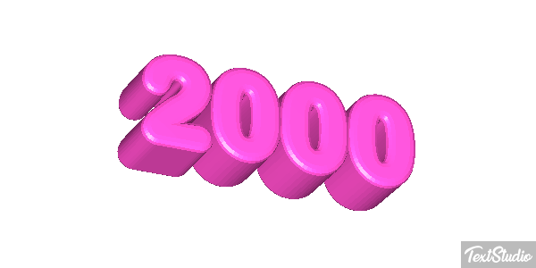

Conheça os anos
 Quero conhecer!Blog anos 2000
Os anos 2000 foram uma década bem marcante, cheia de tendências que hoje são nostálgicas e até voltaram à moda. Foi uma época de transição entre o final dos anos 90 e a popularização massiva da internet e das redes sociais. Vou te contar um pouco sobre moda, música e cultura pop dessa época! ### 🎵 **Música nos anos 2000** A década foi bem diversificada, misturando pop, rock, hip-hop e eletrônica. Algumas tendências musicais que marcaram foram: - **Pop**: Britney Spears, Christina Aguilera e *NSYNC dominaram o começo dos anos 2000. Depois vieram Rihanna, Lady Gaga e Beyoncé. - **Rock/Emo/Punk**: Bandas como Green Day, Linkin Park, My Chemical Romance, Fall Out Boy e Paramore marcaram o rock alternativo e a cultura emo. - **Hip-Hop/Rap**: Eminem, 50 Cent, Kanye West e Lil Wayne foram grandes nomes. O hip-hop começou a dominar as paradas. - **Eletrônica**: O início da febre do electro-pop com David Guetta, Daft Punk e Cascada. - **Funk e Sertanejo no Brasil**: O funk carioca começou a crescer com MCs como Tati Quebra Barraco e Bonde do Tigrão, enquanto o sertanejo universitário ganhou força com Jorge & Mateus e Victor & Leo. ### 👕 **Moda dos anos 2000** A moda dos anos 2000 foi cheia de exageros e experimentações! Algumas tendências clássicas da época foram: - **Jeans de cintura baixa**: Muito usado por celebridades como Britney Spears e Paris Hilton. - **Brilho e strass**: Roupas, bolsas e até celulares brilhavam muito. - **Calças cargo e bermudas largas**: No hip-hop e no estilo skatista, eram super populares. - **Estilo emo/gótico**: Cabelos coloridos ou franja cobrindo um olho, calças justas, correntes e All Star. - **Tênis Skechers e Adidas Superstar**: Todo mundo queria um. - **Acessórios exagerados**: Brincos enormes, pulseiras coloridas (tipo *pulseira do sexo*), boinas e bonés Von Dutch. - **Looks monocromáticos ou sobreposições**: Regatas sobre camisetas, blusas com gola alta e vestidos sobre calças eram moda. ### 📺 **Cultura Pop e Entretenimento** - **Orkut e MSN**: Era como todo mundo se comunicava antes do WhatsApp e Instagram. - **Filmes icônicos**: *Meninas Malvadas*, *As Branquelas*, *Shrek*, *O Senhor dos Anéis*, *Harry Potter*. - **Séries populares**: *Friends* (fim em 2004), *The O.C.*, *One Tree Hill*, *Gossip Girl*, *Lost* e *Supernatural*. - **Desenhos e animes**: *Naruto*, *Dragon Ball Z*, *Avatar: A Lenda de Aang*, *Padrinhos Mágicos*, *Kim Possible* eram febre. - **Jogos**: PlayStation 2 dominava, e jogos como *GTA San Andreas*, *The Sims 2*, *Counter-Strike 1.6* e *Pokémon Emerald* marcaram a época. Os anos 2000 foram uma loucura! Tudo era bem colorido e meio *over-the-top*. Tem alguma parte dessa época que você gostava mais? 😆
Galeria